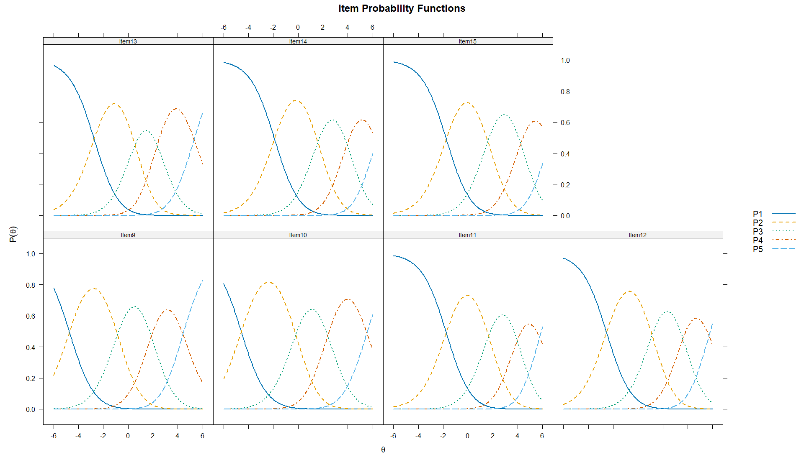
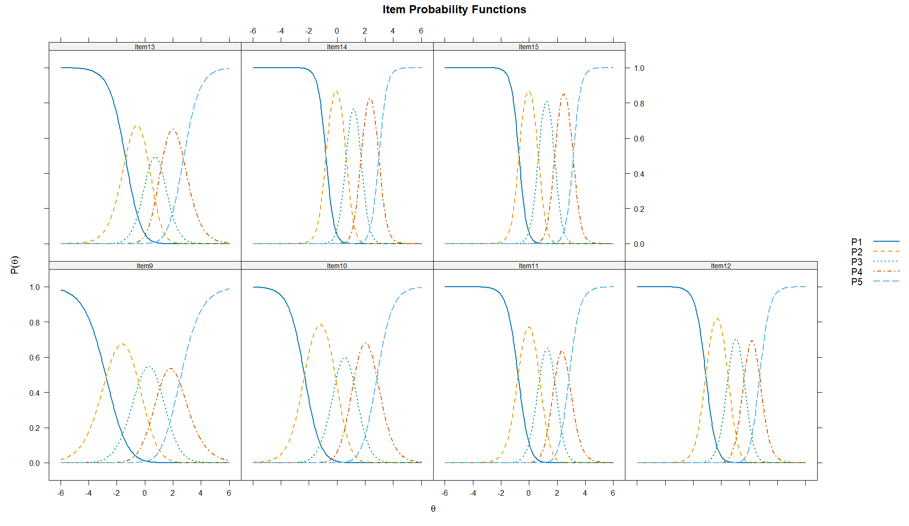
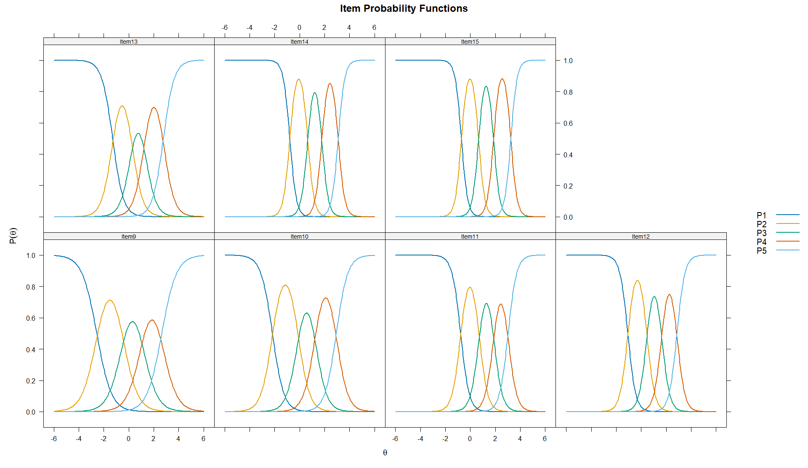
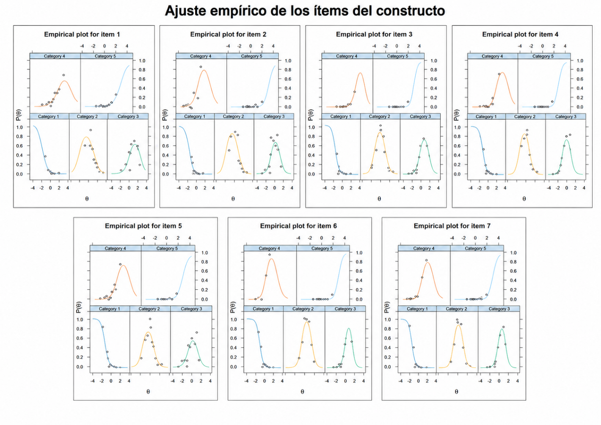
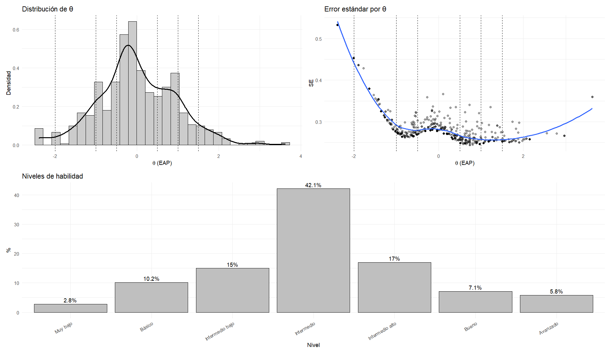
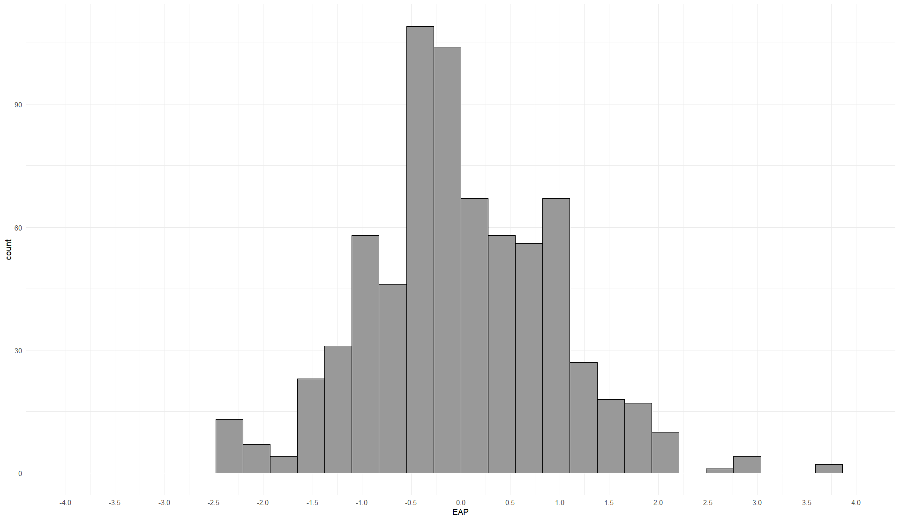
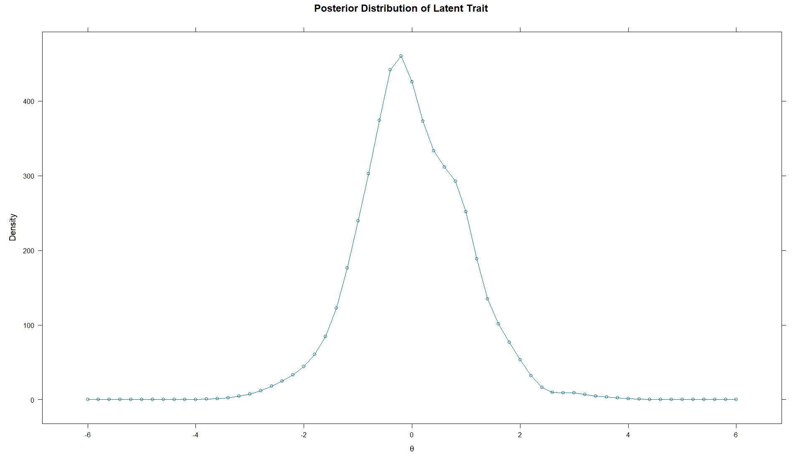
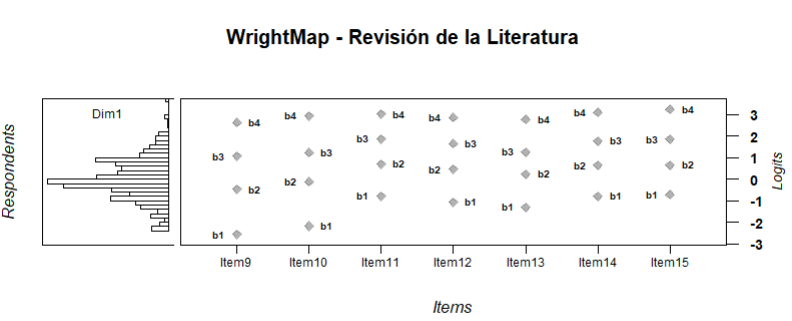
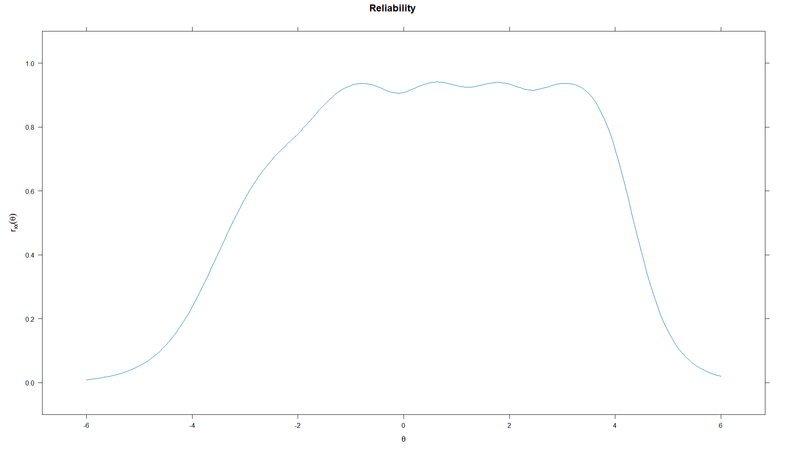

Modelo de Crédito Parcial
Estimación de umbrales del PCM
Los parámetros del Modelo de Crédito Parcial para el constructo Revisión de la literatura mostraron umbrales ordenados en todos los ítems, lo que evidencia un funcionamiento progresivo de las categorías de respuesta. Los ítems 9 y 10 cubren mejor niveles bajos y medios del rasgo latente, mientras que los ítems 11, 14 y 15 presentan umbrales superiores más elevados, lo que indica mayor exigencia para alcanzar las categorías altas. En conjunto, los resultados sugieren que los reactivos permiten representar distintos niveles de habilidad en revisión de la literatura, aunque las categorías superiores requieren niveles particularmente altos del rasgo.
| a | b1 | b2 | b3 | b4 | Item |
|---|---|---|---|---|---|
| 1 | -4.727 | -0.855 | 1.869 | 4.415 | Item9 |
| 1 | -4.568 | -0.181 | 2.387 | 5.540 | Item10 |
| 1 | -1.754 | 1.653 | 3.959 | 5.761 | Item11 |
| 1 | -2.535 | 1.135 | 3.618 | 5.715 | Item12 |
| 1 | -2.740 | 0.553 | 2.336 | 5.309 | Item13 |
| 1 | -1.901 | 1.590 | 3.943 | 6.292 | Item14 |
| 1 | -1.749 | 1.592 | 4.243 | 6.526 | Item15 |
Las curvas de probabilidad por categoría del Modelo de Crédito Parcial evidencian un funcionamiento ordenado de las opciones de respuesta en el constructo Revisión de la literatura. Las categorías inferiores predominan en niveles bajos del rasgo latente, mientras que las categorías intermedias y superiores aumentan progresivamente conforme se incrementa θ. Este patrón respalda la coherencia ordinal de los reactivos, aunque las categorías más altas, especialmente en los ítems 11, 14 y 15, requieren niveles elevados del rasgo para alcanzar mayor probabilidad de selección.

Retrotraducción factorial del PCM
La retrotraducción factorial del PCM mostró comunalidades elevadas y homogéneas en todos los ítems (h² = .909), lo que sugiere una fuerte relación de los reactivos con el rasgo latente. No obstante, esta igualdad responde a la restricción del modelo Rasch/PCM, por lo que la interpretación debe complementarse con modelos que permitan discriminaciones diferenciadas.
Modelo de Crédito Parcial Generalizado
Estimación de parámetros del GPCM
Los parámetros del GPCM para el constructo Revisión de la literatura mostraron discriminaciones diferenciadas entre los ítems (a = 1.240–3.697), con mayor capacidad discriminativa en los ítems 14 y 15. Asimismo, los umbrales se organizaron de manera progresiva, lo que respalda el funcionamiento ordinal de las categorías de respuesta. En conjunto, los resultados sugieren que los reactivos permiten distinguir distintos niveles de habilidad en revisión de la literatura, especialmente en los ítems con mayor discriminación.
| a | b1 | b2 | b3 | b4 | Item |
|---|---|---|---|---|---|
| 1.240 | -2.761 | -0.432 | 1.068 | 2.465 | Item9 |
| 1.773 | -2.316 | -0.061 | 1.187 | 2.840 | Item10 |
| 2.494 | -0.786 | 0.751 | 1.820 | 2.827 | Item11 |
| 2.764 | -1.105 | 0.497 | 1.629 | 2.728 | Item12 |
| 1.688 | -1.380 | 0.320 | 1.152 | 2.745 | Item13 |
| 3.553 | -0.788 | 0.661 | 1.716 | 2.982 | Item14 |
| 3.697 | -0.724 | 0.666 | 1.819 | 3.136 | Item15 |
Las curvas de probabilidad por categoría del GPCM evidencian un funcionamiento ordinal adecuado de los ítems del constructo Revisión de la literatura. Las categorías de respuesta se activan progresivamente conforme aumenta θ, mientras que los ítems con mayor discriminación, especialmente los ítems 14 y 15, presentan curvas más pronunciadas y concentradas. Este patrón sugiere que el modelo permite diferenciar con precisión distintos niveles del rasgo latente, especialmente en los reactivos con mayor capacidad discriminativa.

Retrotraducción factorial del Modelo GPCM
La retrotraducción factorial del GPCM para el constructo Revisión de la literatura mostró cargas factoriales elevadas (F1 = .885–.985) y comunalidades altas (h² = .783–.970), lo que evidencia una fuerte asociación de los ítems con el rasgo latente. La proporción de varianza explicada fue de .908, lo que respalda una estructura unidimensional sólida para este constructo. Aunque el ítem 9 presentó los valores más bajos, estos se mantuvieron en rangos adecuados.
| Item | F1 | h2 |
|---|---|---|
| Item9 | 0.885 | 0.783 |
| Item10 | 0.939 | 0.881 |
| Item11 | 0.967 | 0.936 |
| Item12 | 0.973 | 0.947 |
| Item13 | 0.933 | 0.870 |
| Item14 | 0.984 | 0.967 |
| Item15 | 0.985 | 0.970 |
Modelo de Respuesta Graduada
Estimación de parámetros del GRM
Los parámetros del GRM para el constructo Revisión de la literatura mostraron discriminaciones elevadas entre los ítems (a = 1.706–3.996), con mayor capacidad discriminativa en los ítems 14 y 15. Los umbrales se organizaron progresivamente en todos los reactivos, lo que respalda el funcionamiento ordinal de las categorías de respuesta. En conjunto, los resultados sugieren que los ítems permiten distinguir adecuadamente distintos niveles del rasgo latente, especialmente en los reactivos con mayor discriminación.
| a | b1 | b2 | b3 | b4 | Item |
|---|---|---|---|---|---|
| 1.706 | -2.566 | -0.473 | 1.063 | 2.638 | Item9 |
| 2.182 | -2.178 | -0.117 | 1.244 | 2.935 | Item10 |
| 2.926 | -0.782 | 0.702 | 1.866 | 3.019 | Item11 |
| 3.180 | -1.073 | 0.457 | 1.644 | 2.866 | Item12 |
| 2.307 | -1.298 | 0.235 | 1.265 | 2.766 | Item13 |
| 3.831 | -0.785 | 0.647 | 1.776 | 3.090 | Item14 |
| 3.996 | -0.723 | 0.655 | 1.855 | 3.240 | Item15 |
Las curvas de probabilidad por categoría del GRM evidencian un funcionamiento ordinal adecuado en los ítems del constructo Revisión de la literatura. Las categorías inferiores predominan en niveles bajos de θ, mientras que las categorías intermedias y superiores se activan progresivamente conforme aumenta el rasgo latente. Los ítems 14 y 15 presentan curvas más pronunciadas, coherentes con sus altos parámetros de discriminación, lo que indica mayor capacidad para distinguir niveles cercanos de habilidad. En conjunto, el gráfico respalda el funcionamiento progresivo y discriminativo de los reactivos bajo el modelo GRM.

Retrotraducción factorial del GRM
La retrotraducción factorial del GRM para el constructo Revisión de la literatura mostró cargas factoriales adecuadas y elevadas (F1 = .708–.920), así como comunalidades aceptables (h² = .501–.846). Los ítems 14 y 15 presentaron la mayor asociación con el rasgo latente, mientras que el ítem 9 mostró el valor más bajo, aunque dentro de un rango adecuado. En conjunto, estos resultados respaldan la consistencia unidimensional del constructo bajo el Modelo de Respuesta Graduada.
| Item | F1 | h2 |
|---|---|---|
| Item9 | 0.708 | 0.501 |
| Item10 | 0.789 | 0.622 |
| Item11 | 0.864 | 0.747 |
| Item12 | 0.882 | 0.777 |
| Item13 | 0.805 | 0.648 |
| Item14 | 0.914 | 0.835 |
| Item15 | 0.920 | 0.846 |
Unidimensionalidad del constructo mediante AFC
La unidimensionalidad se evaluó mediante AFC y mediante índices de ajuste derivados de la TRI. El AFC unidimensional del constructo Revisión de la literatura mostró evidencia parcialmente favorable. El SRMR = .081 se ubicó ligeramente por encima del punto de referencia convencional de .08, lo que sugiere una discrepancia residual moderada entre la matriz observada y la reproducida. No obstante, los índices incrementales fueron aceptables, especialmente el CFI escalado = .960 y el TLI escalado = .941, y las cargas factoriales estandarizadas fueron altas (λ = .737–.943), lo que indica que todos los ítems se asociaron de manera clara con el factor latente. El RMSEA fue elevado, por lo que el ajuste no puede considerarse plenamente satisfactorio. Además, los índices de modificación sugirieron asociaciones residuales relevantes entre algunos pares de ítems, principalmente Item14–Item15, Item9–Item10 e Item11–Item12, lo que podría justificar la exploración de una estructura alternativa. En conjunto, los resultados aportan evidencia parcial a favor de una estructura predominantemente unidimensional, aunque con señales de posible redundancia o varianza residual compartida entre algunos reactivos.
De manera complementaria, se utilizaron los índices de ajuste de la TRI mediante el estadístico M2 (Maydeu-Olivares y Joe, 2014). La comparación de ajuste mostró resultados mixtos. El GPCM presentó el mejor ajuste residual, con el SRMSR más bajo (.073) y el CFI más alto (.928), mientras que el PCM obtuvo mejores valores en RMSEA y TLI, aunque con mayor error residual. Sin embargo, al considerar los criterios de información, donde valores menores indican mejor ajuste relativo, el GRM presentó los valores más bajos de AIC, SABIC y BIC, además del mayor logLik. En conjunto, aunque el GPCM mostró un ajuste residual ligeramente más favorable, los criterios comparativos respaldan al GRM como el modelo con mejor ajuste relativo para el constructo Revisión de la literatura.
| Modelo | M2 | gl | RMSEA | IC 95% RMSEA | SRMSR | TLI | CFI | AIC | SABIC | BIC | LogLik |
|---|---|---|---|---|---|---|---|---|---|---|---|
| PCM | 485.661 | 20 | .180 | [.166, .194] | .093 | .910 | .914 | 9832.053 | 9872.849 | 9964.932 | -4887.027 |
| GPCM | 403.090 | 14 | .196 | [.180, .213] | .073 | .893 | .928 | 9713.530 | 9762.766 | 9873.901 | -4821.765 |
| GRM | 451.078 | 14 | .208 | [.192, .225] | .074 | .879 | .920 | 9623.597 | 9672.832 | 9783.968 | -4776.798 |
Independencia local del modelo GRM
La independencia local del modelo GRM se evaluó mediante dos procedimientos complementarios: el estadístico LD de Chen y Thissen (1997) y el índice Q3 de Yen (1984). En el análisis LD, todos los pares superaron el punto de referencia de 10.83; sin embargo, debido a la sensibilidad del estadístico al tamaño muestral, la interpretación se centró en la magnitud de las correlaciones residuales estandarizadas. De acuerdo con la documentación de mirt, estas correlaciones se reportan en el triángulo superior de la matriz LD como coeficientes V de Cramer con signo, por lo que su magnitud se interpretó de manera complementaria con criterios de tamaño del efecto. Desde esta perspectiva, los pares con mayores asociaciones residuales fueron Item11–Item13 (LD = 253.598; r = -.296), Item14–Item15 (LD = 185.183; r = .253) e Item12–Item13 (LD = 181.217; r = -.250). Bajo los puntos de referencia de Cohen (1988), estas asociaciones no alcanzan magnitudes grandes, sino que se ubican entre magnitudes pequeñas y cercanas al límite de una magnitud moderada. Por su parte, el índice Q3 mostró posibles asociaciones residuales en varios pares, especialmente Item9–Item10 (Q3 = .367), Item10–Item15 (Q3 = -.365), Item11–Item15 (Q3 = -.334), Item11–Item14 (Q3 = -.332), Item12–Item14 (Q3 = -.331), Item10–Item14 (Q3 = -.321), Item9–Item15 (Q3 = -.316) e Item9–Item14 (Q3 = -.305), los cuales superan el punto de referencia de |Q3| > .2236. En conjunto, los resultados sugieren que la independencia local no se cumple plenamente, aunque las asociaciones residuales observadas no evidencian un problema generalizado del modelo. Por tanto, estos hallazgos deben interpretarse como evidencia de posibles dependencias locales específicas o redundancia conceptual entre algunos reactivos.
Tabla X
Evaluación integrada de independencia local del GRM para Revisión de la literatura
| Par de ítems | p ajustada | LD | Correlación residual | Q3 | Interpretación |
|---|---|---|---|---|---|
| Item9–Item10 | .000 | 96.373 | .183 | .367 | Dependencia local relevante por Q3 |
| Item9–Item11 | .000 | 55.650 | -.139 | -.078 | LD significativo, magnitud residual baja |
| Item9–Item12 | .000 | 57.776 | -.141 | -.090 | LD significativo, magnitud residual baja |
| Item9–Item13 | .000 | 55.397 | .138 | .089 | LD significativo, magnitud residual baja |
| Item9–Item14 | .000 | 61.509 | -.146 | -.305 | Dependencia local relevante por Q3 |
| Item9–Item15 | .000 | 52.200 | -.134 | -.316 | Dependencia local relevante por Q3 |
| Item10–Item11 | .000 | 76.254 | -.162 | -.044 | LD significativo, magnitud residual baja |
| Item10–Item12 | .000 | 104.708 | -.190 | -.146 | LD significativo, magnitud moderada |
| Item10–Item13 | .000 | 79.169 | .166 | .131 | LD significativo, magnitud residual baja |
| Item10–Item14 | .000 | 80.700 | -.167 | -.321 | Dependencia local relevante por Q3 |
| Item10–Item15 | .000 | 77.363 | -.164 | -.365 | Dependencia local relevante por Q3 |
| Item11–Item12 | .000 | 75.714 | .162 | .095 | LD significativo, magnitud residual baja |
| Item11–Item13 | .000 | 253.598 | -.296 | -.169 | Dependencia local relevante por residual |
| Item11–Item14 | .000 | 63.206 | -.148 | -.332 | Dependencia local relevante por Q3 |
| Item11–Item15 | .000 | 118.454 | -.203 | -.334 | Dependencia local consistente |
| Item12–Item13 | .000 | 181.217 | -.250 | -.272 | Dependencia local consistente |
| Item12–Item14 | .000 | 111.741 | -.197 | -.331 | Dependencia local relevante por Q3 |
| Item12–Item15 | .000 | 49.667 | -.131 | -.248 | Dependencia local relevante por Q3 |
| Item13–Item14 | .000 | 96.854 | -.183 | -.176 | LD significativo, magnitud moderada |
| Item13–Item15 | .000 | 66.011 | -.151 | -.272 | Dependencia local relevante por Q3 |
| Item14–Item15 | .000 | 185.183 | .253 | .205 | Dependencia local relevante por residual |
Ajuste al ítem del modelo GRM
El ajuste al ítem del modelo GRM mostró un funcionamiento generalmente aceptable en el constructo Revisión de la literatura. Los valores de infit y outfit se ubicaron principalmente dentro o muy cerca del rango esperado, aunque los ítems 14 y 15 presentaron valores de outfit ligeramente inferiores a .75, lo que sugiere respuestas más predecibles de lo esperado o posible redundancia con otros reactivos. Los valores de RMSEA.S-X2 fueron bajos en todos los ítems (.030–.056), lo que indica discrepancias reducidas entre las respuestas observadas y las esperadas por el modelo. Aunque las pruebas S-X2 y X2* fueron significativas, esto debe interpretarse con cautela por el tamaño muestral. Gráficamente, los puntos empíricos se ajustan razonablemente a las curvas teóricas en la mayoría de las categorías, aunque se observan pequeñas desviaciones en las categorías intermedias y superiores, especialmente en los ítems 14 y 15. En conjunto, los resultados no sugieren un mal ajuste severo, pero sí respaldan revisar los ítems 14 y 15 por su posible solapamiento o dependencia local.
| Ítem | Zh | Outfit | Infit | RMSEA S-X2 | p S-X2 | p X2* | Interpretación |
|---|---|---|---|---|---|---|---|
| Item9 | 1.181 | .980 | .956 | .048 | .000 | .005 | Ajuste aceptable |
| Item10 | 1.781 | .962 | .921 | .035 | .004 | .009 | Ajuste aceptable |
| Item11 | 2.338 | .825 | .882 | .056 | .000 | .016 | Ajuste aceptable con señal moderada |
| Item12 | 2.535 | .793 | .861 | .030 | .035 | .022 | Ajuste aceptable con señal moderada |
| Item13 | 1.830 | .939 | .947 | .047 | .000 | .009 | Ajuste aceptable |
| Item14 | 3.327 | .721 | .820 | .040 | .002 | .005 | Requiere revisión |
| Item15 | 3.660 | .713 | .792 | .043 | .001 | .009 | Requiere revisión |

Ajuste por persona
El ajuste por persona del modelo GRM permitió identificar patrones de respuesta con mayor desviación respecto a lo esperado por el modelo. Los casos con valores más extremos de Zh presentaron combinaciones heterogéneas de respuestas dentro del constructo Revisión de la literatura, por ejemplo, puntuaciones altas en algunos reactivos y bajas en otros. Este comportamiento sugiere cierto desajuste individual, reflejado en valores elevados de outfit e infit; sin embargo, no implica necesariamente respuestas inválidas. Dado que los ítems representan aspectos específicos del mismo constructo, es posible que algunos participantes muestren mayor dominio en determinadas habilidades, como la búsqueda de fuentes o el desarrollo del marco teórico, y menor dominio en otras, como la discusión epistemológica, la evolución histórica o la identificación de vacíos. Por tanto, estos resultados deben interpretarse como evidencia diagnóstica exploratoria y no como criterio automático de exclusión de casos.
| Caso | Item9 | Item10 | Item11 | Item12 | Item13 | Item14 | Item15 | Outfit | z.outfit | Infit | z.infit | Zh |
|---|---|---|---|---|---|---|---|---|---|---|---|---|
| 1 | 5 | 5 | 2 | 1 | 4 | 1 | 1 | 8.51 | 5.53 | 9.78 | 5.73 | -8.88 |
| 2 | 3 | 2 | 5 | 3 | 1 | 4 | 2 | 5.24 | 4.76 | 5.18 | 4.40 | -7.62 |
| 3 | 3 | 5 | 2 | 2 | 3 | 5 | 2 | 4.93 | 4.62 | 4.16 | 3.73 | -6.93 |
| 4 | 4 | 4 | 2 | 1 | 4 | 1 | 1 | 5.11 | 3.94 | 5.55 | 3.99 | -5.61 |
| 5 | 3 | 1 | 1 | 1 | 4 | 3 | 2 | 4.68 | 2.98 | 4.48 | 3.01 | -5.41 |
| 6 | 4 | 4 | 2 | 4 | 1 | 1 | 2 | 4.71 | 3.01 | 4.50 | 3.17 | -5.33 |
| 7 | 4 | 4 | 1 | 1 | 4 | 3 | 2 | 3.33 | 2.98 | 3.31 | 2.83 | -5.20 |
| 8 | 3 | 3 | 2 | 3 | 5 | 1 | 1 | 5.48 | 3.17 | 5.50 | 3.47 | -4.80 |
| 9 | 3 | 4 | 2 | 1 | 4 | 1 | 1 | 4.52 | 3.75 | 4.56 | 3.57 | -4.65 |
| 10 | 4 | 3 | 3 | 2 | 3 | 4 | 1 | 2.80 | 2.76 | 2.22 | 1.95 | -4.59 |
Curva de información del ítem (IIF)
La Curva de Información del Ítem muestra que el constructo Revisión de la literatura es medido con mayor precisión en un rango aproximado entre θ = -2.5 y θ = 3.5, especialmente en niveles medios y moderadamente altos del rasgo latente. Los ítems con mayor aporte informativo fueron Item15 (a1 = 3.996) e Item14 (a1 = 3.831), seguidos por Item12 (a1 = 3.180) e Item11 (a1 = 2.926), lo cual coincide con sus mayores parámetros de discriminación. En contraste, Item9 (a1 = 1.706) e Item10 (a1 = 2.182) aportan menor información relativa, aunque contribuyen a cubrir niveles más bajos del continuo. En conjunto, el modelo ofrece buena precisión para estimar el rasgo en la zona central y media-alta de la habilidad, pero reduce su precisión en los extremos muy bajos y muy altos de θ.
| Ítem | Discriminación a1 | Aporte informativo esperado |
|---|---|---|
| Item15 | 3.996 | Muy alto |
| Item14 | 3.831 | Muy alto |
| Item12 | 3.180 | Alto |
| Item11 | 2.926 | Alto |
| Item13 | 2.307 | Moderado-alto |
| Item10 | 2.182 | Moderado |
| Item9 | 1.706 | Menor aporte relativo |
Curva de información del test (TIF) y Curva de error estándar (SEC)
La Curva de Información del Test mostró que el constructo Revisión de la literatura aporta su mayor precisión de medida en un rango aproximado de θ = -1.5 a θ = 3.5, donde la información es más alta y, de manera complementaria, el error estándar de estimación se mantiene bajo. Los picos de información se concentran principalmente en niveles medios y medio-altos del rasgo latente, lo que indica que el test discrimina mejor entre personas ubicadas en esos niveles. En contraste, en los extremos del continuo (niveles muy bajos o muy altos de θ), la información disminuye de forma importante y el error estándar aumenta, lo que sugiere una menor precisión de medida en esas zonas. En conjunto, estos resultados indican que el test presenta buena precisión global, especialmente para evaluar niveles intermedios y relativamente altos del constructo.
Estimación de habilidades
Estimación referencial de habilidades latentes
Una vez calibrado el modelo GRM del constructo Revisión de la literatura, se estimaron de manera referencial las habilidades latentes de los participantes mediante el método EAP. Para fines descriptivos, estas habilidades se clasificaron mediante un baremo teórico de la escala θ: muy bajo (θ < -2), básico (-2 ≤ θ < -1), intermedio bajo (-1 ≤ θ < -0.5), intermedio (-0.5 ≤ θ ≤ 0.5), intermedio alto (0.5 < θ ≤ 1), bueno (1 < θ ≤ 1.5) y avanzado (θ > 1.5). Esta clasificación debe interpretarse como una aproximación descriptiva del modelo calibrado, no como una clasificación diagnóstica definitiva.
Las habilidades latentes estimadas mediante EAP se distribuyeron alrededor del centro de la escala θ, con una dispersión cercana a una unidad estándar y un error estándar promedio moderado-bajo. En términos descriptivos, la mayor proporción de participantes se ubicó en el nivel intermedio (42.1%), seguida de los niveles intermedio alto (17.0%) e intermedio bajo (15.0%). Una proporción menor se concentró en los niveles básico (10.2%), bueno (7.1%), avanzado (5.8%) y muy bajo (2.8%). En conjunto, los resultados sugieren que el modelo organiza principalmente a los participantes en niveles intermedios del constructo Revisión de la literatura, con menor presencia de perfiles extremos.
| n | Media θ | DE θ | Mínimo θ | Máximo θ | Media SE | Muy bajo | Básico | Intermedio bajo | Intermedio | Intermedio alto | Bueno | Avanzado |
|---|---|---|---|---|---|---|---|---|---|---|---|---|
| 722 | 0.000 | 0.958 | -2.39 | 3.63 | 0.285 | 20 (2.8%) | 74 (10.2%) | 108 (15.0%) | 304 (42.1%) | 123 (17.0%) | 51 (7.1%) | 42 (5.8%) |

Histograma EAP Revisión de la Literatura Modelo 1 GRM.

Distribución posterior del rasgo latente
La distribución posterior del rasgo latente para el constructo Revisión de la literatura muestra una forma aproximadamente unimodal y centrada alrededor de θ = 0, lo que indica que la mayor concentración de participantes se ubica en niveles medios del rasgo. La curva presenta una disminución progresiva hacia ambos extremos, con menor densidad en niveles muy bajos y muy altos de θ. Aunque se observa una ligera asimetría hacia valores positivos, el patrón general es compatible con una distribución latente razonablemente centrada y concentrada en la zona media.

Evaluación del ajuste persona-ítem mediante Wright Map
El Wright Map muestra que los participantes se concentran principalmente en la zona media del rasgo latente, alrededor de θ = 0, mientras que los umbrales de los ítems se distribuyen desde niveles bajos hasta niveles altos de la escala. Esto indica que el conjunto de ítems está razonablemente dirigido a la muestra, especialmente para evaluar niveles bajos, intermedios y medio-altos de habilidad en Revisión de la literatura.
Los umbrales iniciales b1 se ubican en niveles bajos del rasgo, lo que permite identificar participantes con menor dominio. Los umbrales intermedios b2 y b3 cubren la zona central y media-alta, donde se concentra buena parte de la muestra. Por su parte, los umbrales superiores b4 se localizan en niveles altos, lo que permite diferenciar a participantes con mayor dominio del constructo. No obstante, en los extremos del continuo, especialmente en niveles muy altos y muy bajos, la cobertura es menor. En este sentido, el mapa sugiere que el test está adecuadamente apuntado a la muestra, con mayor utilidad en niveles intermedios del rasgo latente.

Fiabilidad
La fiabilidad marginal del modelo GRM para el constructo Revisión de la literatura fue elevada (rxx = .916), lo que indica una alta precisión general en la estimación del rasgo latente. La curva muestra que la fiabilidad se mantiene en niveles altos principalmente en un rango amplio del continuo, aproximadamente entre θ = -1.5 y θ = 3.8, donde alcanza valores cercanos o superiores a .90. En contraste, la fiabilidad disminuye en los extremos muy bajos y muy altos del rasgo, lo cual es esperable debido a la menor información disponible en esas zonas. En conjunto, los resultados sugieren que el modelo estima con buena precisión los niveles bajos-medios, medios y altos del constructo, aunque con menor precisión en los extremos del continuo.
